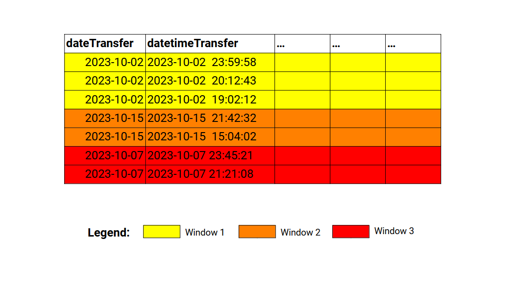

from pyspark.sql.window import Window11 Introducing window functions
Spark offers a set of tools known as window functions. These tools are essential for an extensive range of tasks, and you should know them. But what are them?
Window functions in Spark are a set functions that performs calculations over windows of rows from your DataFrame. This is not a concept exclusive to Spark. In fact, window functions in Spark are essentially the same as window functions in MySQL1.
When you use a window function, the rows of your DataFrame are divided into multiple windows. Each window contains a specific range of rows from the DataFrame. In this context, a window function is a function that receives a window (or a range of rows) as input, and calculates an aggregate or a specific index based on the set of rows that is contained in this input window.
You might find this description very similar to what groupby() and agg() methods do when combined together. And yes… To some extent, the idea of windows in a DataFrame is similar (but not identical) to the idea of “groups” created by group by functions, such as the DataFrame.groupby() method from pyspark (that we presented at Section 5.11.4), or the DataFrame.groupby()2 method from pandas, and also, to dplyr::group_by()3 from the tidyverse framework. You will see further in this chapter how window functions differ from these operations.
11.1 How to define windows
In order to use a window function you need to define the windows of your DataFrame first. You do this by creating a Window object in your session.
Every window object have two components, which are partitioning and ordering, and you specify each of these components by using the partitionBy() and orderBy() methods from the Window class. In order to create a Window object, you need to import the Window class from the pyspark.sql.window module:
Over the next examples, I will be using the transf DataFrame that we presented at Chapter 5. If you don’t remember how to import/get this DataFrame into your session, come back to Section 5.5.
transf.show(5)+------------+-------------------+------------+-------------+----------------+----------+-----------+---------------------+---------------------+----------------------+
|dateTransfer| datetimeTransfer|clientNumber|transferValue|transferCurrency|transferID|transferLog|destinationBankNumber|destinationBankBranch|destinationBankAccount|
+------------+-------------------+------------+-------------+----------------+----------+-----------+---------------------+---------------------+----------------------+
| 2022-12-31|2022-12-31 14:00:24| 5516| 7794.31| zing ƒ| 20223563| NULL| 33| 4078| 72424-2|
| 2022-12-31|2022-12-31 10:32:07| 4965| 7919.0| zing ƒ| 20223562| NULL| 421| 1979| 36441-5|
| 2022-12-31|2022-12-31 07:37:02| 4608| 5603.0| dollar $| 20223561| NULL| 666| 4425| 41323-1|
| 2022-12-31|2022-12-31 07:35:05| 1121| 4365.22| dollar $| 20223560| NULL| 666| 2400| 74120-4|
| 2022-12-31|2022-12-31 02:53:44| 1121| 4620.0| dollar $| 20223559| NULL| 421| 1100| 39830-0|
+------------+-------------------+------------+-------------+----------------+----------+-----------+---------------------+---------------------+----------------------+
only showing top 5 rows
Now, lets create a window object using the transf DataFrame as our target. This DataFrame describes a set of transfers made in a fictitious bank. So a reasonable way of splitting this DataFrame is by day. That means that we can split this DataFrame into groups (or ranges) of rows by using the dateTransfer column. As a result, each partition in the dateTransfer column will create/identify a different window in this DataFrame.
window_spec = Window.partitionBy('dateTransfer')The above window object specifies that each unique value present in the dateTransfer column identifies a different window frame in the transf DataFrame. Figure 11.1 presents this idea visually. So each partition in the dateTransfer column creates a different window frame. And each window frame will become an input to a window function (when we use one).

Until this point, defining windows are very much like defining groups in your DataFrame with group by functions (i.e. windows are very similar to groups). In the above example, we specified only the partition component of the windows. This means that the ordering component is not mandatory for using window functions. But lets define the ordering component anyway.
The partitioning component of the window object specifies which partitions of the DataFrame are translated into windows. In the other hand, the ordering component of the window object specifies how the rows within the window are ordered. Defining this component becomes very important when we are working with window functions that outputs (or that uses) indexes.
As an example, you might want to use in your calculations the first (or the nth) row in each window. In a situation like this, the order in which these rows are founded inside the window affects directly the output of your window function. That is why the ordering component matters.
For example, we can say that the rows within each window should be in descending order according to the datetimeTransfer column:
from pyspark.sql.functions import col
window_spec = Window\
.partitionBy('dateTransfer')\
.orderBy(col('datetimeTransfer').desc())With the above snippet, we are not only specifying how the window frames in the DataFrame are created (with the partitionBy()), but we are also specifying how the rows within the window are sorted (with the orderBy()). If we update our representation with the above window specification, we get something similar to Figure 11.2:

Is worth mentioning that, both partitionBy() and orderBy() methods accepts multiple columns as input. In other words, you can use a combination of columns both to define how the windows in your DataFrame will be created, and how the rows within these windows will be sorted.
As an example, the window specification below is saying: 1) that a window frame is created for each unique combination of dateTransfer and clientNumber; 2) that the rows within each window are ordered accordingly to transferCurrency (ascending order) and datetimeTransfer (descending order).
window_spec = Window\
.partitionBy('dateTransfer', 'clientNumber')\
.orderBy(
col('transferCurrency').asc(),
col('datetimeTransfer').desc()
)11.2 Partitioning or ordering or none
11.3 Introducing the over() clause
In order to use a window function you need to combine an over clause with a window object. If you pair these two components together, then, the function you are using becomes a window function.
Since we know now how to define window objects for our DataFrame, we can actually create and use this object to access window functionality, by pairing this window object with an over() clause.
In pyspark this over() clause is actually a method from the Column class. Since all aggregating functions available from the pyspark.sql.functions module produces a new Column object as output, we tend to use the over() method right after the function call.
For example, if we wanted to calculate the mean of x with the mean() function, and we had a window object called window_spec, we could use the mean() as a window function by writing mean(col('x')).over(window_spec).
from pyspark.sql.window import Window
from pyspark.sql.functions import mean, col
window_spec = Window\
.partitionBy('y', 'z')\
.orderBy('t')
mean(col('x')).over(window_spec)If you see this over() method after a call of an aggregating function (such as sum(), mean(), etc.), then, you know that this aggregating function is being called as a window function.
The over() clause is also available in Spark SQL as the SQL keyword OVER. This means that you can use window functions in Spark SQL as well. But in Spark SQL, you write the window specification inside parentheses after the OVER keyword, and you specify each component with PARTITION BY AND ORDER BY keywords. We could replicate the above example in Spark SQL like this:
mean(x) OVER (PARTITION BY y, z ORDER BY t ASC)11.4 Window functions vs group by functions
Despite their similarities, window functions and group by functions are used for different purposes. One big difference between them, is that when you use groupby() + agg() you get one output row per each input group of rows, but in contrast, a window function outputs one row per input row. In other words, for a window of \(n\) input rows a window function outputs \(n\) rows that contains the same result (or the same aggregate result).
For example, lets suppose you want to calculate the total value transfered within each day. If you use a groupby() + agg() strategy, you get as result a new DataFrame containing one row for each unique date present in the dateTransfer column:
from pyspark.sql.functions import sum
transf\
.orderBy('dateTransfer')\
.groupBy('dateTransfer')\
.agg(sum(col('transferValue')).alias('dayTotalTransferValue'))\
.show(5)+------------+---------------------+
|dateTransfer|dayTotalTransferValue|
+------------+---------------------+
| 2022-01-01| 39630.7|
| 2022-01-02| 70031.46|
| 2022-01-03| 50957.869999999995|
| 2022-01-04| 56068.34|
| 2022-01-05| 47082.04|
+------------+---------------------+
only showing top 5 rows
On the other site, if you use sum() as a window function instead, you get as result one row for each transfer. That is, you get one row of output for each input row in the transf DataFrame. The value that is present in the new column created (dayTotalTransferValue) is the total value transfered for the window (or the range of rows) that corresponds to the date in the dateTransfer column.
In other words, the value 39630.7 below corresponds to the sum of the transferValue column when dateTransfer == "2022-01-01":
window_spec = Window.partitionBy('dateTransfer')
transf\
.select('dateTransfer', 'transferID', 'transferValue')\
.withColumn(
'dayTotalTransferValue',
sum(col('transferValue')).over(window_spec)
)\
.show(5)+------------+----------+-------------+---------------------+
|dateTransfer|transferID|transferValue|dayTotalTransferValue|
+------------+----------+-------------+---------------------+
| 2022-01-01| 20221148| 5547.13| 39630.7|
| 2022-01-01| 20221147| 9941.0| 39630.7|
| 2022-01-01| 20221146| 5419.9| 39630.7|
| 2022-01-01| 20221145| 5006.0| 39630.7|
| 2022-01-01| 20221144| 8640.06| 39630.7|
+------------+----------+-------------+---------------------+
only showing top 5 rows
You probably already seen this pattern in other data frameworks. As a quick comparison, if you were using the tidyverse framework, you could calculate the exact same result above with the following snippet of R code:
transf |>
group_by(dateTransfer) |>
mutate(
dayTotalTransferValue = sum(transferValue)
)In contrast, you would need the following snippet of Python code to get the same result in the pandas framework:
transf['dayTotalTransferValue'] = transf['transferValue']\
.groupby(transf['dateTransfer'])\
.transform('sum')11.5 Ranking window functions
The functions row_number(), rank() and dense_rank() from the pyspark.sql.functions module are ranking functions, in the sense that they seek to rank each row in the input window according to a ranking system. These functions are identical to their peers in MySQL4 ROW_NUMBER(), RANK() and DENSE_RANK().
The function row_number() simply returns a unique and sequential number to each row in a window, starting from 1. It is a quick way of marking each row with an unique and sequential number.
from pyspark.sql.functions import row_number
window_spec = Window\
.partitionBy('dateTransfer')\
.orderBy('datetimeTransfer')
transf\
.select(
'dateTransfer',
'datetimeTransfer',
'transferID'
)\
.withColumn('rowID', row_number().over(window_spec))\
.show(5)+------------+-------------------+----------+-----+
|dateTransfer| datetimeTransfer|transferID|rowID|
+------------+-------------------+----------+-----+
| 2022-01-01|2022-01-01 03:56:58| 20221143| 1|
| 2022-01-01|2022-01-01 04:07:44| 20221144| 2|
| 2022-01-01|2022-01-01 09:00:18| 20221145| 3|
| 2022-01-01|2022-01-01 10:17:04| 20221146| 4|
| 2022-01-01|2022-01-01 16:14:30| 20221147| 5|
+------------+-------------------+----------+-----+
only showing top 5 rows
The row_number() function is also very useful when you are trying to collect the rows in each window that contains the smallest or biggest value in the window. If the ordering of your window specification is in ascending order, then, the first row in the window will contain the smallest value in the current window. In contrast, if the ordering is in descending order, then, the first row in the window will contain the biggest value in the current window.
This is interesting, because lets suppose you wanted to find the rows that contained the maximum transfer values in each day. A groupby() + agg() strategy would tell you which are the maximum transfer values in each day. But it would not tell you where are the rows in the DataFrame that contains these maximum values. A Window object + row_number() + filter() can help you to get this answer.
window_spec = Window\
.partitionBy('dateTransfer')\
.orderBy(col('transferValue').desc())
# The row with rowID == 1 is the first row in each window
transf\
.withColumn('rowID', row_number().over(window_spec))\
.filter(col('rowID') == 1)\
.select('dateTransfer', 'rowID', 'transferID', 'transferValue')\
.show(5)+------------+-----+----------+-------------+
|dateTransfer|rowID|transferID|transferValue|
+------------+-----+----------+-------------+
| 2022-01-01| 1| 20221147| 9941.0|
| 2022-01-02| 1| 20221157| 10855.01|
| 2022-01-03| 1| 20221165| 8705.65|
| 2022-01-04| 1| 20221172| 9051.0|
| 2022-01-05| 1| 20221179| 9606.0|
+------------+-----+----------+-------------+
only showing top 5 rows
The rank() and dense_rank() functions are similar to each other. They both rank the rows with integers, just like row_number(). But if there is a tie between two rows (that means that both rows have the same value in the ordering column, so it becomes a tie, we do not know which one of these rows should come first), then, these functions will repeat the same number/index for these rows in tie. Lets use the df below as a quick example:
data = [
(1, 3000), (1, 2400),
(1, 4200), (1, 4200),
(2, 1500), (2, 2000),
(2, 3000), (2, 3000),
(2, 4500), (2, 4600)
]
df = spark.createDataFrame(data, ['id', 'value'])If we apply both rank() and dense_rank() over this DataFrame with the same window specification, we can see the difference between these functions. In essence, rank() leave gaps in the indexes that come right after any tied rows, while dense_rank() does not.
from pyspark.sql.functions import rank, dense_rank
window_spec = Window\
.partitionBy('id')\
.orderBy('value')
# With rank() there are gaps in the indexes
df.withColumn('with_rank', rank().over(window_spec))\
.show()+---+-----+---------+
| id|value|with_rank|
+---+-----+---------+
| 1| 2400| 1|
| 1| 3000| 2|
| 1| 4200| 3|
| 1| 4200| 3|
| 2| 1500| 1|
| 2| 2000| 2|
| 2| 3000| 3|
| 2| 3000| 3|
| 2| 4500| 5|
| 2| 4600| 6|
+---+-----+---------+
# With dense_rank() there are no gaps in the indexes
df.withColumn('with_dense_rank', dense_rank().over(window_spec))\
.show()+---+-----+---------------+
| id|value|with_dense_rank|
+---+-----+---------------+
| 1| 2400| 1|
| 1| 3000| 2|
| 1| 4200| 3|
| 1| 4200| 3|
| 2| 1500| 1|
| 2| 2000| 2|
| 2| 3000| 3|
| 2| 3000| 3|
| 2| 4500| 4|
| 2| 4600| 5|
+---+-----+---------------+
11.6 Position-based window functions
11.6.1 Getting the next and previous row with lead() and lag()
11.7 Agreggating window functions
In essence, a window function is every function that is compatible with window frames, or, in other words, is a function that can receive window frames as input. Virtually every aggregating function that you can find inside the pyspark.sql.functions module (like sum(), mean(), count(), max() and min()) is a window function.